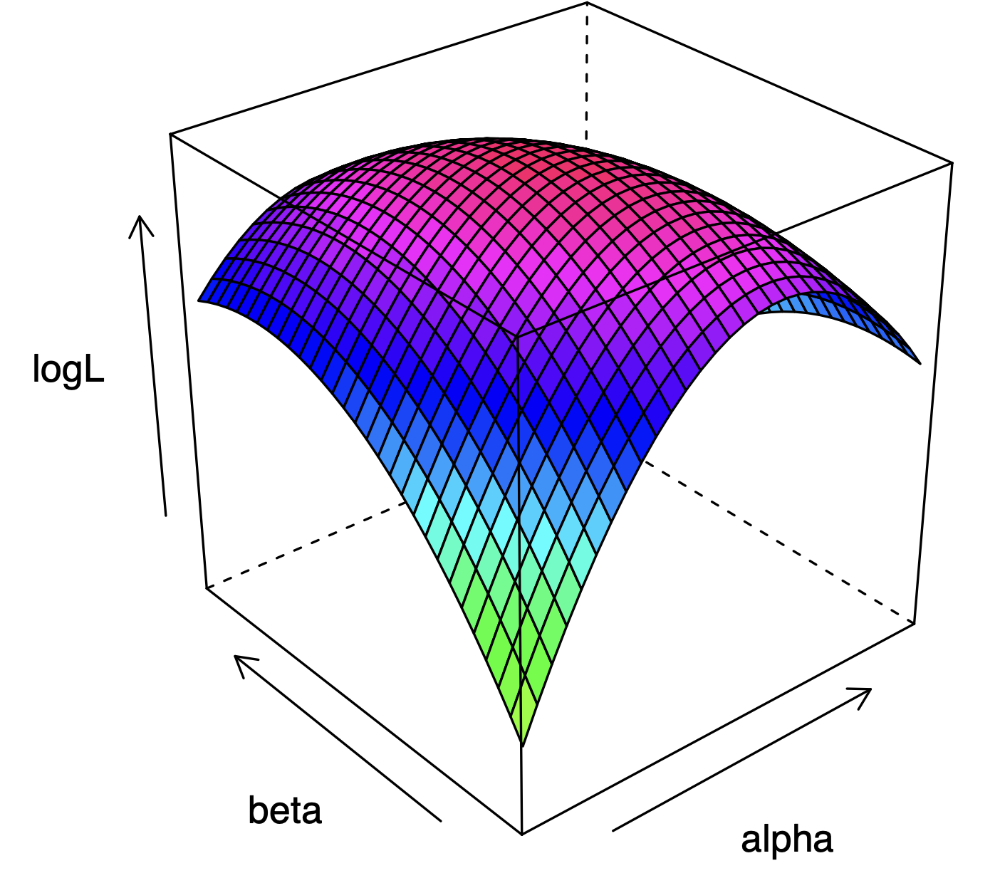

Classical Least Squares Theory
Chapter 3, Quantitative Methods (Causal Inference)
Last chapter, we discussed the multiple linear regression model, and how it can help us measure relationships between explanatory and outcome variables.
This chapter introduces some key theory regarding the ordinary least squares estimator behind linear regression. Topics covered includes properties of estimators, the OLS estimator, and the Method of Moments estimator.
Use the right sidebar for quick navigation. This chapter is heavy on linear algebra, so consulting the linear algebra reference is useful.
Ordinary Least Squares Estimator
Deriving the Estimator
Our linear regression model, and the fitted values \(\hat y\), take the following form:
\[ y = X\beta + \eps, \quad \hat y = X\hat\beta \]
OLS minimises the sum of squared residuals \(S(\hat{\boldsymbol\beta})\) - the differences between the actual \(\mathbf y\) and our predicted \(\hat{\mathbf y}\):
\[ \begin{align} S(\hat\beta) & = (y - \hat y)^\top (y - \hat y)\\ & = (y - \color{blue}{X \hat\beta}\color{black} )^\top (y - \color{blue}{X \hat\beta}\color{black}) && (\because \color{blue}{\hat y = X \hat\beta}\color{black})\\ & = y^\top y - \hat\beta^\top X^\top y - y^\top X \hat\beta + \hat\beta^\top X^\top X \hat\beta && (\text{distribute out}) \\ & = y^\top y \ \color{blue}{- 2 \hat\beta^\top X^\top y} \color{black} + \underbrace{\hat\beta^\top X^\top X \hat\beta}_{\text{quadratic}} && (\because \color{blue}{- \hat\beta^\top X^\top y - y^\top X \hat\beta = - 2 \hat\beta^\top X^\top y} \color{black}) \end{align} \]
Now, let us take the gradient to find the first order condition:
\[ \frac{\partial S(\hat\beta)}{\partial \hat\beta} = -2 X^\top y + 2 X^\top X \hat\beta = 0 \]
When assuming \(X^\top X\) is invertable (which is true if \(X\) is full rank), we can isolate \(\hat\beta\) to find the solution to OLS:
\[ \begin{align} -2 X^\top y + 2 X^\top X \hat\beta & = 0 \\ 2 X^\top X \hat\beta & = 2 X^\top y && ( + 2X^\top y \text{ to both sides}) \\ \hat\beta & = (2X^\top X)^{-1} -2 X^\top y && (\times (2X^\top X)^{-1} \text{ to both sides}) \\ \hat\beta & = (X^\top X)^{-1} X^\top y && (2^{-1}, 2 \text{ cancel out}) \end{align} \tag{1}\]
Those are our coefficient solutions to OLS.
Currently, we are deriving the first order conditions for multiple linear regression using linear algebra.
For simple linear regression (with one explanatory variable), we can use summation notation. Recall our sum of squared residuals in summation form:
\[ SSR = S(\hat\beta_0, \hat\beta_1)= \sum\limits_{i=1}^n(Y_i - \hat\beta_0 - \hat\beta_1X_i)^2 \]
We want to minimise the SSR in respect to both \(\hat\beta_0\) and \(\hat\beta_1\). We can do this by finding our first order conditions:
\[ \begin{align} \frac{\partial S(\hat\beta_0, \hat\beta_1)}{\partial \hat\beta_0} & = \sum\limits_{i=1}^n(Y_i - \hat\beta_0 - \hat\beta_1X_i) = 0 \\ \frac{\partial S(\hat\beta_0, \hat\beta_1)}{\partial \hat\beta_1} & = \sum\limits_{i=1}^n X_i(Y_i - \hat\beta_0 - \hat\beta_1X_i) = 0 \\ \end{align} \]
These conditions create a system of equations, which you can solve for the OLS solutions of \(\widehat{\beta_0}\) and \(\widehat{\beta_1}\). I will not show it step by step, as it is tedious (and not that important). The OLS solutions are
\[ \begin{align} \hat\beta_0 & = \bar Y - \widehat{\beta_1} \bar X \\ \hat\beta_1 & = \frac{\sum_{i=1}^n(X_i - \bar X)(Y_i - \bar Y)}{\sum_{i=1}^n(X_i - \bar X)^2} = \frac{Cov(X_i, Y_i)}{\V Y_i} \end{align} \]
Projection and Residual Maker
We can use the OLS solution from Equation 1 to get our fitted values \(\hat{y}\):
\[ \begin{align} \hat y & = X\hat\beta \\ & = X \color{blue}{(X^\top X)^{-1}X^\top y} && \color{black}(\because \color{blue}{\hat\beta = (X^\top X)^{-1}X^\top y} \color{black}) \\ & = \color{red}{P}\color{black}y && (\because \color{red}{P:= X(X^\top X)^{-1}X^\top}) \end{align} \tag{2}\]
Matrix \(\color{red}{P}\), called the projection matrix, is a matrix operator that performs the linear mapping \(y \rightarrow \hat{ y}\).
We can also use the OLS solution from Equation 1 to get our residuals \(\hat{\eps}\) (note \(I\) is the identity matrix):
\[ \begin{align} \hat\eps & = y - \hat y \\ & = y - \color{blue}{Py} && \color{black}( \because \color{blue}{\hat y = Py}\color{black}) \\ & = (I-P)y && (\text{factor out y}) \\ & = \color{purple}{M}\color{black}y && (\because \color{purple}{M:= I - P}\color{black}) \end{align} \]
Matrix \(\color{purple}{M}\), called the residual maker, is a matrix operator that performs the linear mapping \(y \rightarrow \hat{\eps}\).
Both \(\color{red}{P}\) and \(\color{purple}{M}\) are symmetric matrices: \(P^\top = P, \ M^\top = M\). They are also both idempotent matrices: \(PP = P, \ MM = M\). We can prove this second statement using the first (I will only do it for \(P\), but the same applies for \(M\):
\[ \begin{align} PP & = X(X^\top X)^{-1} \underbrace{X^\top X(X^\top X)^{-1}}_{= I} X^\top \\ & = X(X^\top X)^{-1} X^\top = P \end{align} \tag{3}\]
\(\color{red}{ P}\) and \(\color{purple}{ M}\) are also orthogonal to each other - i.e. \(P^\top M = 0\):
\[ \begin{align} P^\top M & = \color{blue}{P}\color{black}M && (\because \color{blue}{P^\top = P}\color{black}) \\ & = P(\color{blue}{I-P}\color{black}) && (\because \color{blue}{M:= I - P}\color{black}) \\ & = P - PP && \text{(distribute out)} \\ & = P - \color{blue}{P} && \color{black}(\because \color{blue}{PP = P}\color{black}) \\ & = 0 \end{align} \]
Orthogonal Projection of OLS
We know that our fitted values \(\hat{y}\) are created as a linear combination of our explanatory variables \(X\):
\[ \hat Y_i = \hat\beta_0 + \hat\beta_1X_{i1} + \dots + \hat\beta_pX_{ip} \]
That means, by the definition of vector spaces, that our explanatory variable vectors \(x_1, x_2, \dots, x_p\) span a space that includes our fitted values vector \(\hat{y}\). So, what \(\color{red}{ P}\) is doing is taking our original data vector \(y\), and projecting it into the space spanned by our explanatory variables \(X\) (called the column space).
We can see in the figure below, our observed \(y\) vector is being projected onto the blue plane spanned by \(X\) to create our fitted values vector \(\hat{y}\).

Residual maker matrix \(\color{purple}{M}\) projects \(y\) onto the space orthogonal to the column space of \(X\) to get our residuals \(\hat{\eps}\). We can see this in the figure above, where the residuals vector (notated \(\mathbf e\) in the figure) is orthogonal/perpendicular to the space of \(\mathbf X\).
Error Covariance Matrix
Aside from the population parameters \(\beta\), there is another part of the linear model that needs to be estimated: the population covariance matrix of error terms \(\eps_1, \dots, \eps_n\):
\[ \underbrace{\V(\eps|X)}_{\mathrm{cov. \ matrix}} = \begin{pmatrix} \V\eps_1 & cov(\eps_1, \eps_2) & cov(\eps_1, \eps_3) & \dots \\ cov(\eps_2, \eps_1) & \V\eps_2 & cov(\eps_2, \eps_3) & \dots \\ cov(\eps_3, \eps_1) & cov(\eps_3, u_2) & \V\eps_3 & \vdots \\ \vdots & \vdots & \dots & \ddots \end{pmatrix} \]
Under the assumption of independence of observations (a key assumption of the linear model), the covariance elements should all equal 0, i.e. \(cov(\eps_i, \eps_k) = 0, \ \forall \ i, k\). This assumption is also called no autocorrelation.
Thus, under this assumption, we have a diagonal matrix.
\[ \underbrace{\V(\eps| X)}_{\mathrm{cov. \ matrix}} = \begin{pmatrix} \V\eps_1 & 0 & 0 & \dots \\ 0 & \V\eps_2 & 0 & \dots \\ 0 & 0 & \V \eps_3 & \vdots \\ \vdots & \vdots & \dots & \ddots \end{pmatrix} \]
We are not really going to discuss what happens when autocorrelation is present, as generally for many of our purposes, ruling out autocorrelation is okay. However, if you are interested in time series (common in economics), or spatial statistics, these are types of data that frequently have autocorrelation issues, and this creates further complications.
Homoscedasticity and Heteroscedasticity
Now, there are two possible forms of our covariance matrix of errors. Homoscedasticity assumes that every single unit \(i\) has the same variance in error \(\V \eps_i = \sigma^2\). Or in other words, the error of \(\eps_i\) does is independent of which unit \(i\) (which also means \(\eps_i \perp\!\!\!\perp X\)). This assumption (with no autocorrelation) is also called Spherical Errors.
\[ \V(\eps | X) = \sigma^2 I_n = \begin{pmatrix} \sigma^2 & 0 & \dots & 0 \\ 0 & \sigma^2 & \dots & 0 \\ \vdots & \vdots & \ddots & 0 \\ 0 & 0 & \dots & \sigma^2 \end{pmatrix} \tag{4}\]
Below is a figure illustrating different residual standard deviations, with the same best-fit line.

\(\sigma^2\) is a population parameter. We can estimate it with the following unbiased estimator \(s^2 = \frac{\hat{\eps}^\top \hat{\eps}}{n-k-1}\). This is the reason we use a t-distribution in hypotheses tests - to account for the uncertainty of this estimator. We will show this later when deriving variance.
Heteroscedasticity is when we do not believe the assumption of a constant variance for all units. Instead, we assume each unit \(i = 1, \dots, n\) has their own variance \(\sigma^2_1, \dots, \sigma^2_n\), which also implies that \(\eps_i\) is dependent on \(X\) values for unit \(i\).
\[ \V(\eps| X) = \begin{pmatrix} \sigma^2_1 & 0 & \dots & 0 \\ 0 & \sigma^2_2 & \dots & 0 \\ \vdots & \vdots & \ddots & 0 \\ 0 & 0 & \dots & \sigma^2_n \end{pmatrix} \tag{5}\]
We can estimate each individual population parameter \(\sigma^2_i\) with \(s^2_i = \hat\eps_i^2\).
An easy way to identify homoscedasticity is to look at a residual plot (just the plot of all \(\hat\eps_i\)):

Notice how the homoscedasticity residuals seem to have the same up-down variance, no matter the value of \(X_i\).
The heteroscedasticity residuals have a clear pattern - the up-down variance is smaller when \(X_i\) is smaller, and the up-down variance is larger when \(X_i\) is larger.
Essentially, if you see a pattern in the residual plot, it is likely heteroscedasticity.
Sample Properties of OLS
OLS as an Unbiased Estimator
OLS is an unbiased estimator of the relationship between any \(X_{ij}\) and \(Y_i\) under 4 conditions:
- Linearity in parameters: the population model can be modelled as \(y = X\beta + \eps\).
- Random Sampling: our sample is randomly sampled (implying independence of observations).
- No Perfect Multicolinearity: There is no exact linear relationships between the regressors. This ensures that \(X^\top X\) is invertible, which is required for the derivation of OLS.
- Zero Conditional Mean: \(\E(\eps| X) = 0\). This implies that no \(X_{ij}\) is correlated with \(\eps\) (exogeneity), and no function of multiple regressors is correlated with \(\eps\).
Let us prove OLS is unbiased - i.e. \(\E\hat\beta = \beta\). Let us manipulate our OLS solution:
\[ \begin{align} \hat\beta & = (X^\top X)^{-1} X^\top y \\ & = (X^\top X)^{-1} X^\top(\color{blue}{X\beta + \eps}\color{black}) && (\because \color{blue}{y = X\beta + \eps}\color{black}) \\ & = \underbrace{(X^\top X)^{-1} X^\top X}_{= \ I}\beta + (X^\top X)^{-1}X^\top \eps && \text{(multiply out)} \\ & = \beta + (X^\top X)^{-1}X^\top \eps \end{align} \tag{6}\]
Now, let us take the expectation of \(\hat\beta\) conditional on \(X\). Remember condition 4, \(\E(\eps | X) = 0\):
\[ \E(\hat\beta | X) = \beta + (X^\top X)^{-1} \underbrace{\E(\eps | X)}_{= \ 0} \ = \ \beta \]
Now, we can use the law of iterated expectations (LIE) to conclude this proof:
\[ \begin{align} \E \hat\beta & = \E(\E(\hat\beta|X)) && (\because \mathrm{LIE}) \\ & = \E(\color{blue}{\beta}\color{black}) && (\because \color{blue}{\E(\hat\beta | X = \beta)}\color{black}) \\ & = \beta && \text{(expectation of a constant)} \end{align} \]
Thus, OLS is unbiased under the 4 conditions above.
Deriving Variance
We want to find the variance of our estimator, \(\V(\hat\beta | X)\). First, let us start off where we left off in Equation 6 .
\[ \begin{align} & \hat\beta = \beta + (X^\top X)^{-1} X^\top \eps \\ & \V(\hat\beta | X) = \V(\beta + (X^\top X)^{-1} X^\top \eps) \end{align} \]
If \(\eps\) is an \(n\) dimensional vector of random variables, \(c\) is an \(m\) dimensional vector, and \(B\) is an \(n \times m\) dimensional matrix with fixed constants, then the following is true:
\[ \V(c + B\eps) = B \V(\eps) B^\top \tag{7}\]
I will not prove this lemma here, but it is provable.
\(\beta\) is a vector of fixed constants. \((X^\top X)^{-1} X^\top \eps\) can be imagined as a matrix of fixed constants, since we are conditioning the variance on \(X\) (so for each \(X\), it is fixed). With the Lemma above:
\[ \begin{align} \V (\hat\beta | X) & = (X^\top X)^{-1}X^\top \V(\eps|X) [(X^\top X)^{-1}X^\top]^{-1} && \text{(lemma)} \\ & = (X^\top X)^{-1}X^\top \V(\eps|X) \color{blue}{X(X^\top X)^{-1}} && \color{black}(\because \color{blue}{[(X^\top X)^{-1}X^\top]^{-1} = X(X^\top X)^{-1}} \color{black}) \end{align} \]
From here on, homoscedasticity and heteroscedasticity matter. Let us first start by deriving variance with homoscedasticity, using the definition given by Equation 4 :
\[ \begin{align} \V (\hat\beta | X) & = (X^\top X)^{-1}X^\top \color{blue}{\sigma^2I_n}\color{black}{X} (X^\top X)^{-1} && (\because \color{blue}{\V(\eps|X) = \sigma^2 I_n}\color{black}) \\ & = \color{blue}{\sigma^2}\color{black}{\underbrace{(X^\top X)^{-1}X^\top X}_{= \ I}(X^\top X)^{-1}} && \text{(rearrange and simplify)} \\ & = \sigma^2 (X^\top X)^{-1} \end{align} \]
Now, let us calculate the variance for when heteroscedasticity is present, as defined by Equation 5 :
\[ \V(\hat{\beta}| X) = (X^\top X)^{-1} X^\top \color{blue}{\begin{pmatrix} \sigma^2_1 & 0 & \dots & 0 \\ 0 & \sigma^2_2 & \dots & 0 \\ \vdots & \vdots & \ddots & 0 \\ 0 & 0 & \dots & \sigma^2_n \end{pmatrix}}\color{black} X ( X^\top X)^{-1} \]
To calculate both sets of standard errors (normal and robust), we estimate \(\sigma^2\) and \(\sigma_i^2\) as discussed previously. The standard errors are then the square root of our estimated variances.
Gauss-Markov Theorem
The Gauss-Markov Theorem states that the OLS estimator is the best linear unbiased estimator (BLUE) - the unbiased linear estimator with the lowest variance, under 5 conditions: linearity, random sampling, no perfect multicollinearity, zero-conditional mean, and homoscedasticity.
Any linear estimator takes the form \(\tilde{\beta} = Cy\). For example, the OLS estimator is of the form \(\hat\beta = (X^\top X)^{-1} X^\top y\), which is the same as form as \(Cy\) if you define \(C:= ( X^\top X)^{-1} X^\top\). For any linear estimator \(\tilde{\beta} = Cy\) to be unbiased, we need to assume \(\color{red}{CX = I}\).
For any linear estimator \(\tilde{\beta} = Cy\) to be unbiased, we need to assume \(\color{red}{CX = I}\). The proof of this is as follows:
\[ \begin{align} \tilde\beta = C & (\color{blue}{C\beta + \eps}\color{black}) && (\because \color{blue}{y = X\beta + \eps}\color{black}) \\ = C & X\beta + C\eps && \text{(multiply out)} \\ \E(\tilde\beta | X) & = \E(C X\beta + C\eps) \\ & = CX\beta + C \underbrace{\E(\eps | X)}_{= \ 0} && \text{(take constants out of exp.)} \\ & = CX\beta \\ & = \color{red}{I}\color{black}\beta = \beta && (\because \color{red}{CX = I}\color{black}) \\ \E \tilde\beta & = \E( \E(\tilde\beta|X)) && \text{(law of iterated expect.)} \\ & = \E(\color{blue}{\beta}\color{black}) && (\because \color{blue}{\E(\tilde\beta|X) = \beta}\color{black}) \\ & = \beta && \text{(expect. of a constant)} \end{align} \]
Thus, we have shown \(\color{red}{CX = I}\) is a necessary condition for any linear estimator \(\tilde{\beta} = Cy\) to be unbiased.
Now, let us calculate the variance of \(\tilde{\beta}\), taking into consideration the lemma (Equation 7) used in the OLS variance:
\[ \begin{align} \V(\tilde\beta | X) & = \V(Cy|X) \\ & = \V(C(\color{blue}{X\beta + \eps}\color{black})|X) && (\because \color{blue}{y = X\beta + \eps}\color{black}) \\ & = \V(\underbrace{CX}_{= I}\beta + C\eps | X) && \text{(multiply out)} \\ & = \V(\beta + C\eps | X) \\ & = C \V(\eps | X) C^\top && \text{(using lemma)} \\ & = C \color{blue}{\sigma^2 I_n} \color{black} C^\top && (\mathrm{homoscedasticity} \ \color{blue}{\V(\eps|X) = \sigma^2 I_n}\color{black}) \\ & = \sigma^2 CC^\top && \text{(rearrange and simplify)} \end{align} \]
Now, we want to show that the variance of the OLS estimator \(\hat{\beta}\) (under homoscedasticity) is smaller than any linear estimator \(\tilde{\beta}\). Let us find the difference between the variances of estimator \(\tilde{\beta}\) and \(\hat{\beta}\). Note: since \(\color{red}{CX = I}\), the following is also true: \(\color{red}{ X^\top C^\top = (CX)^\top = I}\).
\[ \begin{align} \V(\tilde\beta | X) - \V(\hat\beta|X) & = \sigma^2 CC^\top - \sigma^2 (X^\top X)^{-1} \\ & = \sigma^2(CC^\top - (X^\top X)^{-1}) && (\text{factor out }\sigma^2) \\ & = \sigma^2(CC^\top - \color{red}{CX}\color{black}(X^\top X)^{-1} \color{red}{X^\top C^\top}\color{black}) && (\because \color{red}{X^\top C^\top = CX = I}\color{black}) \\ & = \sigma^2 C(I - X(X^\top X)^{-1} X^\top) C^\top && (\text{factor out }C, C^\top) \\ & = \sigma^2 C \color{blue}{M}\color{black}C^\top && (\text{residual maker matrix } \color{blue}{M}\color{black}) \end{align} \]
Since \(\sigma^2 CM C^\top\) is positive semi-definite (I will not prove this, but it is provable with the properties of \(M\) introduced earlier), we know that \(V(\tilde{\beta}| X) > V(\hat{\beta}| X)\). Thus, OLS is BLUE under the Gauss-Markov Theorem.
Asymptotic Consistency of OLS
OLS is an asymptotically consistent estimator of the relationship between any \(x_j\) and \(y\) under 4 conditions. These conditions are identical to the unbiasedness conditions EXCEPT condition 4, which is weakened from the original unbiasedness condition.
- Linearity (see unbiasedness)
- Random Sampling (…)
- No Perfect Multicolinearity (…)
- Zero Mean and Exogeneity: \(\E(\eps_i) = 0\), and \(Cov(x_i, \eps_i) = 0\), which implies \(E(X_i \eps_i) = 0\). This means that no regressor should be correlated with \(\mathbf u\). This is weaker than Zero-Conditional mean, since it means a function of regressors can be correlated with \(\eps_i\).
The following statements are true (with \(x_i\) being a vector and \(\eps_i\) being a scalar):
\[ \begin{split} & X^\top X = \sum\limits_{i=1}^n x_i x_i^\top\\ & X^\top \mathbf \eps = \sum\limits_{i=1}^n x_i \eps_i \end{split} \]
Let us start of where we left of from Equation 6. Using vector notation, law of large numbers, and zero-mean and exogeneity condition:
\[ \begin{align} \hat\beta & = \beta + (X^\top X)^{-1} X^\top \eps \\ & = \beta \left( \sum\limits_{i=1}^n x_i x_i^\top \right)^{-1} \left( \sum\limits_{i=1}^n x_i \eps_i \right) && \text{(vector notation)} \\ & = \beta + \left( \frac{1}{n}\sum\limits_{i=1}^n x_i x_i^\top \right)^{-1} \left( \frac{1}{n} \sum\limits_{i=1}^n x_i \eps_i \right) && (\left(\frac{1}{n}\right)^{-1}, \frac{1}{n} \text{ cancel out}) \end{align} \]
\[ \begin{align} \mathrm{plim}\hat\beta & = \beta + \left( \mathrm{plim} \frac{1}{n}\sum\limits_{i=1}^n x_i x_i^\top \right)^{-1} \left( \mathrm{plim}\frac{1}{n} \sum\limits_{i=1}^n x_i \eps_i \right) \\ & = \beta + (\E(x_i x_i^\top))^{-1} \underbrace{\E(x_i \eps_i)}_{= 0} = \beta && \text{(law of large numbers)} \end{align} \]
Thus, OLS is asymptotically consistent under the 4 conditions above.
Regression Anatomy and Specification
Partitioned Regression Model
We can split up matrix \(X\) into two matrices - \(X_1\) containing the regressors we care about, and \(X_2\) containing regressors we do not care about. Vector \(\beta\) will be split in the same way. Our partitioned model is:
\[ y = X_1 \beta_1 + X_2 \beta_2 + \eps \]
Recall our “residual maker” matrix \(M\). First, note a unique property: \(\color{red}{MX = 0}\). Now, let us define the residual making matrix for the second part of the regression \(M_2\):
\[ M_2 = I - X_2 (X_2^\top X_2)^{-1}X_2^\top \]
Now, let us multiply both sides of our above partitioned model by \(M_2\):
\[ \begin{align} M_2 y & = M2(X_1\beta_1 + X_2\beta_2 + \eps) \\ M_2 y & = M_2X_1 \beta_1 + M_2 X_2 \beta_2 + M_2 \eps && \text{(multiply out)} \\ M_2 y & = M_2 X_1 \beta_1 + M_2 \eps && (\because M_2X_2 = 0, \ \because \color{red}{MX = 0}\color{black}) \end{align} \]
Now, let us denote \(\tilde{y} := M_2 y\), \(\tilde{X}_1: = M_2 X_1\), and error \(\tilde\eps := M_2 \eps\). Then we get the following regression equation and OLS coefficient estimates:
\[ \tilde y = \tilde X_1 \beta_1 + \tilde\eps \]
\[ \hat\beta_1 = (\tilde X_1^\top \tilde X_1)^{-1}\tilde X_1 ^\top \tilde y \]
Remember that vector \(\hat{\beta}_1\) is our coefficient estimates for \(X_1\), the portion of \(X\) we are interested in. This is equivalent to the coefficient estimates had we not partitioned the model.
Notice how in the formula, we have \(\tilde{X}_1\). What is \(\tilde{X}_1 := M_2 X_1\)? Well, we know that $ M_2 X_2 = 0$. That tells us that any part of \(X_1\) that was correlated to \(X_2\) also became 0. Thus, \(\tilde{X}_1\) is the part of \(X_1\) that is uncorrelated with \(X_2\).
Generalised, What this essentially means is that the coefficient estimates of OLS \(\hat\beta_j\) actually measure the effect on \(Y_i\) of the part of \(X_{ij}\) uncorrelated with the other explanatory variables \(X_{i1}, \dots, x_{ip}\). Essentially, we are partialling out the effect of other variables. This is why we can “control” for other variables when focusing on the coefficient of one (or a few) variables.
Omitted Variable Bias
From the regression anatomy theorem, we know that \(\hat\beta_j\) is the relationship of \(Y_i\) and the part of \(X_{ij}\) that is uncorrelated with all the other explanatory variables. That implies that if we omit a variable that is correlated with both \(X_{ij}\) and \(Y_i\), that we will get a different (biased) coefficient estimate. This is called omitted variable bias.
Suppose there is some variable \(Z_i\) that we have not included in a “short” regression. The actual, “true” regression of the population, would include this confounder \(Z_i\)
\[ \underbrace{y = X\beta + \eps}_{\text{short regression}} \qquad \underbrace{y = X\beta + z\delta + \eps}_{\text{true regression with z} } \]
The OLS estimate of the “short regression” excluding confounder \(Z_i\) is:
\[ \begin{align} \hat\beta & = (X^\top X)^{-1}X^\top y \\ & = (X^\top X)^{-1}X^\top(\color{blue}{X\beta + z\delta + \eps}\color{black}) && (\because \color{blue}{y = X\beta + z\delta + \eps}\color{black}) \\ & = \underbrace{(X^\top X)^{-1}X^\top X}_{= \ I}\beta + (X^\top X)^{-1}X^\top z\delta + (X^\top X)^{-1} X^\top \eps && \text{(multiply out)} \\ & = \beta + (X^\top X)^{-1}X^\top z\delta + (X^\top X)^{-1} X^\top \eps \end{align} \]
Now, let us find the expected value of \(\hat\beta\), which is conditional on \(X, z\), and simplify (using zero conditional mean):
\[ \begin{align} \E(\hat\beta | X, z) & = \beta + (X^\top X)^{-1}X^\top z \delta + (X^\top X)^{-1} X^\top \underbrace{\E(\eps | X, z)}_{= 0} \\ & = \beta + (X^\top X)^{-1}X^\top z \delta \end{align} \]
Now, what if we had a regression of outcome variable being the confounder \(z\), on the explanatory variables \(X\), such that \(z = X\eta + u\). Our OLS estimate would have the solution:
\[ \hat\eta = (X^\top X)^{-1} X^\top z \]
Now, we can plug \(\hat\eta\) into our expected value of \(\hat\beta\). Assume our estimator \(\hat{\eta}\) is unbiased:
\[ \begin{align} \E(\hat\beta | X, z) & = \beta + (X^\top X)^{-1}X^\top z \delta\\ & = \beta + \color{blue}{\hat\eta}\color{black}\delta && (\because \color{blue}{\hat\eta = (X^\top X)^{-1} X^\top z }\color{black}) \\ \E\hat\beta & = \E(\E(\hat\beta|X, z)) && \text{(law of iterated expect.)} \\ & = E(\color{blue}{\beta + \hat\eta \delta}\color{black}) && (\because \color{blue}{\E(\hat\beta|X, z) = \beta + \hat\eta\delta} \color{black}) \\ & = \beta + \E\hat\eta \ \delta && \text{(take out constants from exp.)} \\ & = \beta + \eta\delta && (\text{unbiased estimator } \E\hat\eta = \eta) \end{align} \]
Thus, we can see by not including confounder \(z\) in our “short regression”, the estimator is now biased by \(\hat\eta \delta\). In the next chapter when we start discussing causality, we will see omitted confounders as a huge issue in our estimation.
Method of Moments Estimator
Method of Moments
The Method of Moments Estimator is another estimator of the true value of populations in the parameter. The estimator defines key population moments of interest - which are the population parameters written in terms of expected value functions set equal to 0.
Then, the Method of Moments uses the sample equivalents of the population moments to estimate the population parameter. For example, to estimate the population mean, the Method of Moments uses the sample mean.
In order to define a method of moments for a set of parameters \(\theta_1, \dots, \theta_p\), we need to specify at least one population moment per parameter. Or in other words, we must have more than \(p\) population moments.
Our population moments can be defined as the expected value of some function \(m(\theta; Y_i)\) that consists of both the variable \(Y_i\) and our unknown parameter \(\theta\). The expectation of the function \(m(\theta; Y_i)\) should equal 0.
\[ \E(m(\theta; Y_i)) = 0 \]
Our sample moments will be the sample analogues of \(\theta\) and \(Y_i\), which are \(\hat\theta\) and \(Y_i\):
\[ \frac{1}{n}\sum\limits_{i=1}^n m(\hat\theta; Y_i) = 0 \]
Method of moments estimators are asymptotically consistent, because of the law of large numbers.
Population Mean Estimator
Let us say that we have some random variable \(y\), with a true population mean \(\mu\). We want to estimate \(\mu\), but we only have a sample of the population. How can we define \(\mu\) in a moment of the form: \(\E(m(\mu, y)) = 0\)? Well, we know \(\mu\) is the expectation of \(Y_i\), so \(\mu = \E(Y_i)\). Since they are equal, \(\mu - E(y) = 0\). Thus, we can define the mean as a moment of the following condition:
\[ \E(Y_i - \mu) = 0 \]
The method of moments estimator uses the sample equivalent of the population moment. The sample equivalent of \(\mu\), is the sample mean \(\bar y\):
\[ \E(Y_i - \hat\mu) = \frac{1}{n}\sum\limits_{i=1}^n (Y_i - \hat\mu) = 0 \]
With this equation, we can then solve for \(\hat\mu\):
\[ \begin{align} 0 & = \frac{1}{n}\sum\limits_{i=1}^n (Y_i - \hat\mu) \\ 0 & = \frac{1}{n}\sum\limits_{i=1}^nY_i - \frac{1}{n}\sum\limits_{i=1}^n \hat\mu && (\text{multiply out})\\ 0 & = \frac{1}{n}\sum\limits_{i=1}^nY_i - \frac{1}{n} n \hat\mu &&(\text{summation property of constant } \hat\mu)\\ 0 & = \bar Y - \hat \mu && (\text{definition of mean }\frac{1}{n}\sum\limits_{i=1}^nY_i = \bar Y)\\ \hat\mu & = \bar Y && (+\hat\mu\text{ to both sides}) \end{align} \]
So, we see the method of moments estimates our true population mean \(\mu\), with the sample mean \(\bar Y\). As a method of moments estimator, it is also asymptotically consistent.
OLS as a Method of Moments
OLS is a special case of the Method of Moments Estimator. Consider the bivariate regression model. The OLS estimator can be derived as a method of moments estimator, with 2 moments (expectation functions set equal to 0), one for each parameter (\(\beta_0, \beta_1\)):
\[ \begin{split} & \E(Y_i-\beta_0 -\beta_1X_i) = E(\eps_i) = 0 \\ & \E(X_i(Y_i - \beta_0 - \beta_1 X_i)) = E(x_i \eps_i) = 0 \end{split} \]
The estimates of these moments would use the sample equivalents: \(\hat\beta_0\) and \(\hat\beta_1\).
\[ \begin{split} & \E(Y_i-\hat\beta_0 -\hat\beta_1X_i) = 0 \\ & \E(X_i(Y_i - \hat\beta_0 - \hat\beta_1 X_i)) = 0 \end{split} \]
Now, recall our OLS minimisation conditions (simple linear regression, presented in the extra info box above). Since by definition, average/expectation is \(\E(x) = \frac{1}{n} \sum x_i\), we can rewrite as:
\[ \begin{split} & \sum\limits_{i=1}^n (Y_i - \hat{\beta}_0 - \hat{\beta}_1 X_i) = \ n \times \E(Y_i - \hat\beta_0 - \hat\beta_1X_i) = 0 \\ & \sum\limits_{i=1}^n X_i (Y_i - \hat{\beta}_0 - \hat{\beta}_1 X_i) = \ n \times \E(X_i(Y_i - \hat\beta_0 - \hat\beta_1X_i)) = 0 \end{split} \]
And since anything multiplied to a zero turns into zero, we can ignore the \(n\) in the first order condition. Which as we can see, are the exact same minimisation conditions as the method of moments estimator.
Thus, the OLS estimator is a special case of the Method of Moments estimator, and they produce the same coefficients. This is an important property for the instrumental variables method that will be covered later.
Maximum Likelihood Estimator
Likelihood Functions
We have a set of population parameters \(\boldsymbol\theta\) we want to estimate. This set of parameters determines our population distribution of \(y\), which we can describe with some probability density function \(\varphi(y, \boldsymbol\theta)\). For example, in linear regression, our population \(y\) is determined by the population parameters \(\beta_0, \dots, \beta_k\).
When we are estimating parameters, we will have sample data with \(n\) number of observations, with each observation \(i\) having its own \(y_i\) value. Thus, our sample looks something like \((y_1, \dots, y_n)\). Based on the probability density function of the population \(y\), the probability of selecting point \(y_1\) from the population data is \(\varphi(y_1, \boldsymbol\theta)\), and the probability of selection point \(y_i\) is \(\varphi(y_i, \boldsymbol\theta)\).
We know by the rules of probability, that the probability of multiple independent events is the product of their probabilities. Thus, the probability that we get a specific sample with \(y\) values \((y_1, \dots ,y_n)\), based on the value of our population parameters \(\boldsymbol\theta\) is given by the likelihood function \(L\):
\[ \begin{align} L(\boldsymbol\theta, y_1, \dots y_n) & = \varphi(y_1;\boldsymbol\theta) \times \varphi(y_2;\boldsymbol\theta) \times \dots \times \varphi(y_n;\boldsymbol\theta) \\ & = \prod\limits_{i=1}^n \varphi(y_i, \boldsymbol\theta) \\ \end{align} \]
We want to find some values of \(\boldsymbol\theta\) that make it the highest probability we observe our sample \(y_1, \dots ,y_n\). This is done by maximising the likelihood function \(L\). However, maximising the actual likelihood function is very difficult, because of the product notation. Luckily, we can use the log of the likelihood function, which retains the same maximum/minimum points. Using the properties of logarithms, we can also rewrite our log-likelihood function in terms of summation notation, making maximisation far easier.
\[ \begin{align} \log L(\boldsymbol\theta, y_1, \dots y_n) & = \log \left(\prod_{i=1}^n \varphi(y_i; \theta) \right) \\ & = \log[\varphi(y_1, \boldsymbol\theta) \times \varphi(y_2, \boldsymbol\theta) \times \dots \times \varphi(y_n, \boldsymbol\theta)] && \text{(expand product notation)} \\ & = \log[\varphi(y_1, \boldsymbol\theta)] + \log [\varphi(y_2, \boldsymbol\theta)] + \dots + \log[\varphi(y_n, \boldsymbol\theta)] && \text{(property of logs)} \\ & = \sum\limits_{i=1}^n \log[\varphi(y_i, \boldsymbol\theta)] && \text{(condense into sum)} \end{align} \tag{8}\]
We then maximise this log-likelihood function to obtain our estimates \(\hat{\boldsymbol\theta}\). Sometimes, maximisation is not possible with mathematics, so we need algorithms to do this.
In some more complex models, we cannot mathematically find the minimum of the log-likelihood function. So instead, we resort to a series of computer algorithms called gradient descent. The algorithm takes the following form:
- We randomly choose values of \(\boldsymbol\theta\) to start (let us notate the chosen as \(\boldsymbol\theta^*\)), and calculate the likelihood \(L\) with those chosen at \(\boldsymbol\theta^*\).
- We then slightly shift the values of \(\boldsymbol\theta^*\) upwards and downwards, calculating all the likelihoods. We see in which shift-direction does the likelihood \(L\) increase the most.
- Once we determine the direction that \(L\) increases the most, we shift int hat direction to a new \(\boldsymbol\theta'\) value. Once again, we slightly shift values of \(\boldsymbol\theta'\) upwards and downwards, and see which shift-direction does the likelihood \(L\) increase the most.
- We keep repeating this process of moving in the direction that increases \(L\) the most, shifting around in all directions at that point, and once again moving in the direction that increases \(L\) the most.
- We stop when we are at some point \(\boldsymbol\theta^!\) where all directions of shits decrease \(L\). We are “at the top of the mountain”, and that becomes our estimate.
This is a very simple gradient descent algorithm. You might point out that this algorithm only works if there is one global maximum, and no local maxima (since we would stop the algorithm at a local extrema if this were the case). This usually is not an issue since in common regression models (linear, logistic, poisson), their is only one global maximum. The figure below shows this:

A solution for this problem of local maxima (which becomes more an issue with machine learning models) is to basically do the estimation algorithm multiple times, each time starting at some random \(\boldsymbol\theta^*\). Then, we find the time with the largest \(L\). This will in theory help us determine which are local and global maxima.
Properties and Information Criterion
The Maximum Likelihood Estimator has a few very desirable properties for us.
- The maximum likelihood estimator is asymptotically consistent \(plim(\hat\theta_{MLE}) = \theta\).
- The maximum likelihood estimator is asymptotically normal, which allows for statistical inference.
- The maximum likelihood estimator also has the smallest asymptotic variance in the general class of estimators. Thus in large sample sizes, the MLE is asymptotically efficient.
Another reason the maximum likelihood estimator is so useful is because it is relatively intuitive. The MLE is simply maximising the likelihood we observe our sample given the population parameters. It is not imposing some strange criteria of maximisation.
Finally, maximum likelihood estimation allows us to use Information Criterion statistics, which can tell us how good our model is. Recall that the likelihood function \(L\) is essentially the probability of observing our sample data given our model and parameters. Thus, we should expect better specified models to have a higher likelihood \(L\).
You could compare the likelihood \(L\) between models without any modification. In fact, the likelihood ratio test (similar to f-test but for MLE) does exactly this, and is commonly used in non-OLS estimated models (logistic, poisson, factor anlaysis, etc.).
However, statisticians don’t just want the best fitting model - they also want a model that balances complexity. This implies some punishment for adding a ton of extra variables. The most popular is Akaike’s Information Criterion (AIC), which is calculated as follows:
\[ AIC = -2 \log L + 2k \]
- Where \(L\) is the likelihood of the model, and \(k\) is the number of parameters.
The lower the AIC, the better the model is considered. There are also alternatives, including Bayesian Information Criterion (BIC), but these are less commonly used.
OLS as a Maximum Likelihood Estimator
One common question of students regarding OLS is - why least squares (SSR), and why not minimising the absolute values of errors (or the quartic of errors)? Well the answer is that OLS is a maximum likelihood estimator when assuming homoscedasticity and error term \(u \sim \mathcal N (0, \sigma^2)\).
We know in a simple linear regression, \(\mu = E(y|x) = \beta_0 - \beta_1 x_i\). Let us plug that into the probability density function of a normal distribution to get the PDF of \(y\) in a simple linear regression:
\[ \varphi(y) = \frac{1}{\sqrt{2\pi\sigma^2}} e^{\left( -\frac{(y- \mu)^2}{2 \sigma^2}\right)}, \quad \varphi(y_i|\beta_0, \beta_1, \sigma^2) = \frac{1}{\sqrt{2\pi\sigma^2}} e^{\left( -\frac{1}{2 \sigma^2}(y_i - \beta_0 - \beta_1 x_i)^2\right)} \]
By Equation 8, the log-likelihood function of our sample for linear regression is:
\[ \begin{align} \log L(y_i | \beta_0, \beta_1 \sigma^2) & = \log \left(\prod\limits_{i=1}^n \varphi(y_i | \beta_0, \beta_1, \sigma^2) \right) \\ & = \sum\limits_{i=1}^n \log \varphi(y_i, \beta_0, \beta_1, \sigma^2) && (\text{from eq. (8)}) \\ & = \sum\limits_{i=1}^n \log \left( \frac{1}{\sqrt{2\pi\sigma^2}} e^{\left( -\frac{1}{2 \sigma^2}(y_i - \beta_0 - \beta_1 x_i)^2\right)} \right) \\ & = \sum\limits_{i=1}^n \log \left( \frac{1}{\sqrt{2\pi\sigma^2}}\right) + \log\left( e^{\left( -\frac{1}{2 \sigma^2}(y_i - \beta_0 - \beta_1 x_i)^2\right)}\right) && \text{(prop. of logs)} \\ & = \sum\limits_{i=1}^n \log (1) - \log (\sqrt{2\pi\sigma^2}) + \log\left( e^{\left( -\frac{1}{2 \sigma^2}(y_i - \beta_0 - \beta_1 x_i)^2\right)}\right) && \text{(prop. of logs)} \\ & = \sum\limits_{i=1}^n \log (1) - \log (\sqrt{2\pi}) - \log(\sqrt{\sigma^2}) + \log\left( e^{\left( -\frac{1}{2 \sigma^2}(y_i - \beta_0 - \beta_1 x_i)^2\right)}\right) && \text{(prop. of roots)} \\ & = \sum\limits_{i=1}^n 0 - \frac{1}{2}\log ({2\pi}) - \frac{1}{2}\log(\sqrt{\sigma^2}) + \log\left( e^{\left( -\frac{1}{2 \sigma^2}(y_i - \beta_0 - \beta_1 x_i)^2\right)}\right) && \text{(prop. of logs)} \\ & = \sum\limits_{i=1}^n -\frac{1}{2} \log (2\pi) - \frac{1}{2} \log (\sigma^2) + \left( -\frac{1}{2 \sigma^2}(y_i - \beta_0 - \beta_1 x_i)^2\right) \\ & = -\frac{n}{2} \log (2\pi) - \frac{n}{2} \log (\sigma^2) -\frac{1}{2 \sigma^2}\sum\limits_{i=1}^n(y_i - \beta_0 - \beta_1 x_i)^2 && \text{(prop. of sums)} \end{align} \]
Now, let us find the first-order conditions of this equation in respect to parameters \(\beta_0, \beta_1, \sigma^2\) to maximise:
\[ \begin{align} & \frac{\partial \log L}{\partial \hat\beta_0} = \frac{1}{\sigma^2}\sum\limits_{i=1}^n (y_i - \hat\beta_0 - \hat\beta_1x_i) = 0\\ & \frac{\partial \log L}{\partial \hat\beta_1} = \frac{1}{\sigma^2}\sum\limits_{i=1}^n x_i(y_i - \hat\beta_0 - \hat\beta_1x_i) = 0\\ & \frac{\partial \log L}{\partial \hat\sigma^2} = -\frac{n}{2 \hat\sigma^2} + \frac{1}{2\hat\sigma^4} \sum\limits_{i=1}^n (y_i - \hat\beta_0 - \hat\beta_1x_i) = 0\\ \end{align} \]
We can ignore the third condition. If we look at the first two conditions, since anything times 0 equals 0, we can ignore the \(\frac{1}{\sigma^2}\). Ignoring those, we see we have the exact same first order conditions as OLS, which will yield the same estimates. This illustrates that OLS is a case of MLE, and the same intuitive reasoning of MLE can be applied to OLS.